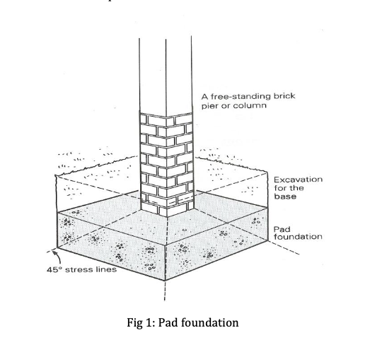

Spread Footing Foundation
Pad Foundation
Pad foundation is a sub category of shallow foundation which settles and spreads over the soil safely. If the soil at the site has sufficient strength and is not too deep them Pad foundation is preferred. Thickness of pad foundation is generally uniform. Pad foundation spreads safely over the concentrated load to the bearing stratum. Hence the design of the foundation should be stiff so that uniform spreading of load to the soil takes place without making the foundation pressure exceed the permissible bearing stress. This is achieved by making the pad deep or by reinforcing the pad as both the techniques helps to spread the force in a predefined angle.
The angle of spreading is calculated by the bearing capacity of the underlying soil and concrete strength. Size of the pad should be design such that the tension inside the concrete should be prevented; as a result no cracking will take place which will result in failure. The arrangement of pad foundation mainly depends on load bearing capacity of the soil, available space, imposed loads and the structure to be supported. Materials that can be used in pad foundation are reinforcement and cast in – situ concrete (OPC or SRPC).

Advantages of Pad Foundation
- Can be designed to accommodate tight sites
- Reinforcement for tension and shear can be added.
- Economic due to control of foundation size.
- Shallow form of foundation needs little excavation.
Disadvantages of Pad Foundation
- Foundation size can be a very large to cope with high point loads.
- Limited foundation suitability to point loads of framed buildings.
- Separate foundations make this design weak against differential settlement that may affect the building.
- Deep excavations for foundations would require support to prevent caving in.
- Weak against uplift forces, wind forces and earthquake forces.